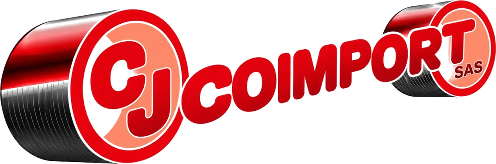

Producto importado para surtir tu negocio
Deportes, juguetería y hogar en un solo proveedor. Elige las referencias, indica las cantidades y recibe tu cotización por WhatsApp.
0referencias
3líneas de producto
0subcategorías
Arrastra para girar · toca un producto para ver su ficha
1
Elige las referencias
Filtra por categoría o busca por número de referencia.
2
Indica las cantidades
Tu cotización suma referencias y unidades automáticamente.
3
Envía por WhatsApp
El pedido llega listo a nuestro asesor comercial.
Líneas de producto
Ver todo el catálogo →Compra por categoría
Destacados
Productos destacados
Catálogo completo
Todas las referencias
Agrega productos a tu cotización con la cantidad que necesitas.
Asesoría comercial
¿Compras por volumen o tienes una referencia específica?
Escríbenos y un asesor te confirma disponibilidad, precios por mayor y tiempos de entrega.
Escribir por WhatsApp+57 314 244 4580